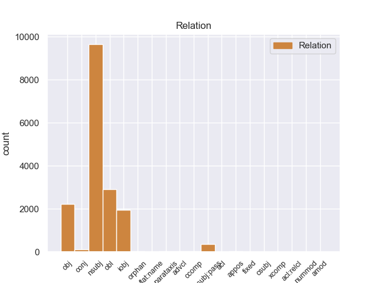
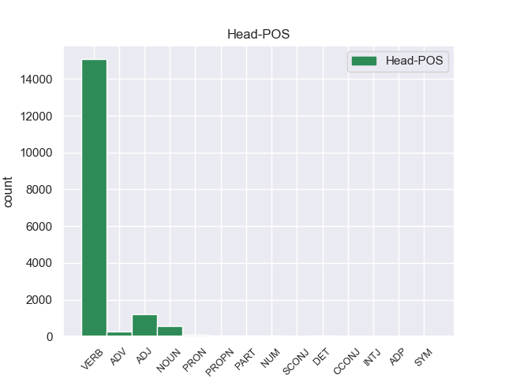
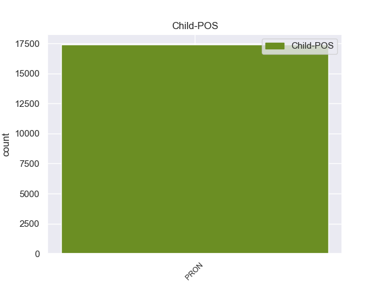

Distribution of features within this leaf



non-conforming Examples:
1 В _ _ _ _ 0 _ _ _
2 приемной _ _ _ _ 0 _ _ _
3 его он PRON _ Case=Acc|Gender=Masc|Number=Sing|Person=3 6 obj 6:obj _
4 с _ _ _ _ 0 _ _ _
5 утра _ _ _ _ 0 _ _ _
6 ожидали ожидать VERB _ Aspect=Imp|Mood=Ind|Number=Plur|Tense=Past|VerbForm=Fin|Voice=Act 0 _ _ _
7 посетители _ _ _ _ 0 _ _ _
8 , _ _ _ _ 0 _ _ _
9 - _ _ _ _ 0 _ _ _
10 кое-кто _ _ _ _ 0 _ _ _
11 с _ _ _ _ 0 _ _ _
12 важными _ _ _ _ 0 _ _ _
13 делами _ _ _ _ 0 _ _ _
14 , _ _ _ _ 0 _ _ _
15 а _ _ _ _ 0 _ _ _
16 кое-кто _ _ _ _ 0 _ _ _
17 и _ _ _ _ 0 _ _ _
18 с _ _ _ _ 0 _ _ _
19 такими _ _ _ _ 0 _ _ _
20 , _ _ _ _ 0 _ _ _
21 которые _ _ _ _ 0 _ _ _
22 легко _ _ _ _ 0 _ _ _
23 можно _ _ _ _ 0 _ _ _
24 было _ _ _ _ 0 _ _ _
25 решить _ _ _ _ 0 _ _ _
26 в _ _ _ _ 0 _ _ _
27 нижестоящих _ _ _ _ 0 _ _ _
28 инстанциях _ _ _ _ 0 _ _ _
29 , _ _ _ _ 0 _ _ _
30 не _ _ _ _ 0 _ _ _
31 затрудняя _ _ _ _ 0 _ _ _
32 Семена _ _ _ _ 0 _ _ _
33 Еремеевича _ _ _ _ 0 _ _ _
34 . _ _ _ _ 0 _ _ _
1 В _ _ _ _ 0 _ _ _
2 глубине _ _ _ _ 0 _ _ _
3 стоял стоять VERB _ Aspect=Imp|Gender=Masc|Mood=Ind|Number=Sing|Tense=Past|VerbForm=Fin|Voice=Act 0 _ _ _
4 широкий _ _ _ _ 0 _ _ _
5 письменный _ _ _ _ 0 _ _ _
6 стол _ _ _ _ 0 _ _ _
7 с _ _ _ _ 0 _ _ _
8 бронзовыми _ _ _ _ 0 _ _ _
9 чернильницами _ _ _ _ 0 _ _ _
10 и _ _ _ _ 0 _ _ _
11 перед _ _ _ _ 0 _ _ _
12 ним он PRON _ Case=Ins|Gender=Masc|Number=Sing|Person=3 3 conj 3:conj _
13 два _ _ _ _ 0 _ _ _
14 кожаных _ _ _ _ 0 _ _ _
15 кресла _ _ _ _ 0 _ _ _
16 . _ _ _ _ 0 _ _ _
1 Семен _ _ _ _ 0 _ _ _
2 Еремеевич _ _ _ _ 0 _ _ _
3 очень _ _ _ _ 0 _ _ _
4 не _ _ _ _ 0 _ _ _
5 любил _ _ _ _ 0 _ _ _
6 , _ _ _ _ 0 _ _ _
7 когда _ _ _ _ 0 _ _ _
8 за _ _ _ _ 0 _ _ _
9 этот _ _ _ _ 0 _ _ _
10 стол _ _ _ _ 0 _ _ _
11 кто-нибудь _ _ _ _ 0 _ _ _
12 садился _ _ _ _ 0 _ _ _
13 , _ _ _ _ 0 _ _ _
14 и _ _ _ _ 0 _ _ _
15 если _ _ _ _ 0 _ _ _
16 видел _ _ _ _ 0 _ _ _
17 отодвинутый _ _ _ _ 0 _ _ _
18 стул _ _ _ _ 0 _ _ _
19 , _ _ _ _ 0 _ _ _
20 то _ _ _ _ 0 _ _ _
21 всегда _ _ _ _ 0 _ _ _
22 собственноручно _ _ _ _ 0 _ _ _
23 подвигал подвигать VERB _ Aspect=Imp|Gender=Masc|Mood=Ind|Number=Sing|Tense=Past|VerbForm=Fin|Voice=Act 0 _ _ _
24 его он PRON _ Case=Acc|Gender=Masc|Number=Sing|Person=3 23 obj 23:obj _
25 на _ _ _ _ 0 _ _ _
26 место _ _ _ _ 0 _ _ _
27 , _ _ _ _ 0 _ _ _
28 так _ _ _ _ 0 _ _ _
29 чтобы _ _ _ _ 0 _ _ _
30 спинки _ _ _ _ 0 _ _ _
31 образовывали _ _ _ _ 0 _ _ _
32 ровную _ _ _ _ 0 _ _ _
33 прямую _ _ _ _ 0 _ _ _
34 линию _ _ _ _ 0 _ _ _
35 . _ _ _ _ 0 _ _ _
1 Она она PRON _ Case=Nom|Gender=Fem|Number=Sing|Person=3 5 nsubj 5:nsubj SpaceAfter=No
2 , _ _ _ _ 0 _ _ _
3 видимо _ _ _ _ 0 _ _ _
4 , _ _ _ _ 0 _ _ _
5 волновалась волноваться VERB _ Aspect=Imp|Gender=Fem|Mood=Ind|Number=Sing|Tense=Past|VerbForm=Fin|Voice=Mid 0 _ _ _
6 , _ _ _ _ 0 _ _ _
7 потому _ _ _ _ 0 _ _ _
8 что _ _ _ _ 0 _ _ _
9 забыла _ _ _ _ 0 _ _ _
10 закрыть _ _ _ _ 0 _ _ _
11 за _ _ _ _ 0 _ _ _
12 собой _ _ _ _ 0 _ _ _
13 обе _ _ _ _ 0 _ _ _
14 обитые _ _ _ _ 0 _ _ _
15 черной _ _ _ _ 0 _ _ _
16 клеенкой _ _ _ _ 0 _ _ _
17 двери _ _ _ _ 0 _ _ _
18 . _ _ _ _ 0 _ _ _
1 - _ _ _ _ 0 _ _ _
2 Садитесь _ _ _ _ 0 _ _ _
3 , _ _ _ _ 0 _ _ _
4 пожалуйста _ _ _ _ 0 _ _ _
5 , _ _ _ _ 0 _ _ _
6 - _ _ _ _ 0 _ _ _
7 сказал сказать VERB _ Aspect=Perf|Gender=Masc|Mood=Ind|Number=Sing|Tense=Past|VerbForm=Fin|Voice=Act 0 _ _ _
8 он он PRON _ Case=Nom|Gender=Masc|Number=Sing|Person=3 7 nsubj 7:nsubj SpaceAfter=No
9 , _ _ _ _ 0 _ _ _
10 не _ _ _ _ 0 _ _ _
11 поднимая _ _ _ _ 0 _ _ _
12 глаз _ _ _ _ 0 _ _ _
13 . _ _ _ _ 0 _ _ _